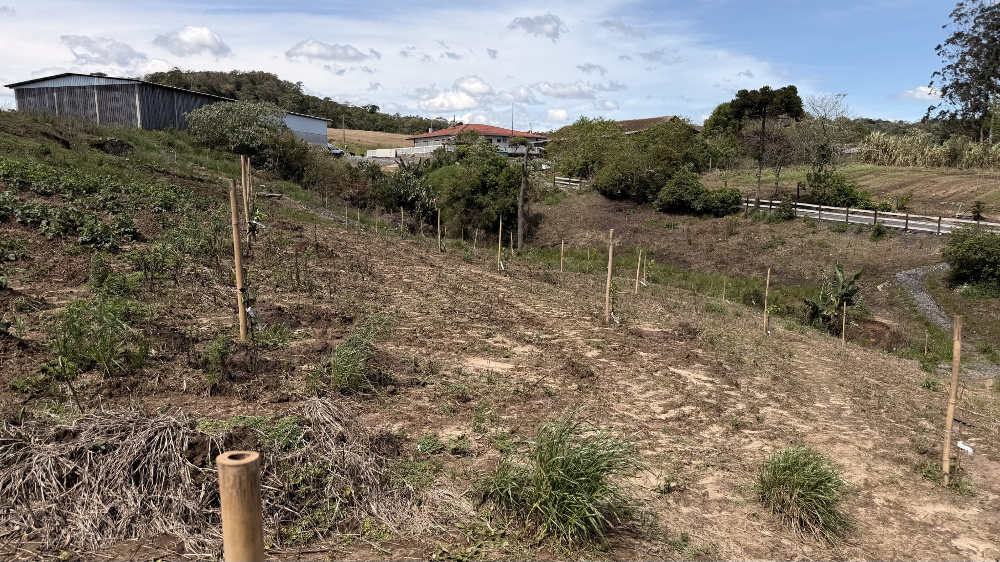

🔎 Encontre uma árvore
Pesquise pelo nome da planta ou pelo código da placa.
O cadastro reúne 132 posições no croqui de 26/11/2026. Identificações e dados de campo seguem em conferência.
🌿 Explore do seu jeito
Quer explorar outra representação do terreno? Abra o mapa interativo.
🌱 Conhecimento que cria raízes
JoIA — Inteligência Artificial do Sistema CNA/Senar
Tem dúvidas sobre frutíferas, plantio, poda, adubação ou cuidados com as plantas? Amplie seus conhecimentos com a inteligência artificial voltada ao meio rural.
💬 Consultar a JoIA do SENAR ↗Abre o WhatsApp. Serviço externo do Sistema CNA/Senar; as respostas não substituem orientação técnica.💚 Um pomar de histórias e gratidão
Na Acolhida Beija-Flor, o Pomar do Peregrino nasceu do desejo de unir fé, natureza e hospitalidade. Cada muda representa o carinho de quem contribuiu com o projeto e a esperança de oferecer frutos, sombra e aprendizado aos peregrinos.

Acolhida Beija-Flor, no Caminho do Louvor.


As fotografias registram etapas do projeto. O plantio individual e a identificação botânica das mudas devem ser confirmados no cadastro.
📲 Compartilhe essa história
Ajude mais peregrinos e amigos a conhecer o Pomar do Peregrino.
👣 Visitas ao site: Aguardando ativação
📖 Livro Digital de Memórias dos Peregrinos
Cada peregrino, uma história.
Cada história, uma semente.
Cada semente, um legado.
Compartilhe suas experiências, lembranças e sentimentos vividos na Acolhida Beija-Flor e no Pomar do Peregrino.
✍️ Deixe sua mensagem ↗Seu depoimento será divulgado somente com sua autorização. O formulário abre em uma nova aba.
🌳 Sua história também faz parte do nosso pomar!
Visitou a Acolhida Beija-Flor ou o Pomar do Peregrino? Compartilhe conosco suas experiências, fotografias, sugestões e momentos especiais vividos durante a caminhada.
acolhidabeijaflorsc@gmail.com
Cada peregrino traz uma história. Cada mensagem ajuda a cultivar nossas raízes e preservar nossas memórias.
Pedro e Vanderléia – Acolhida Beija-Flor